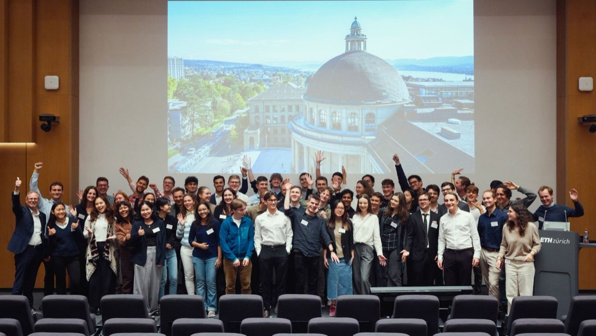
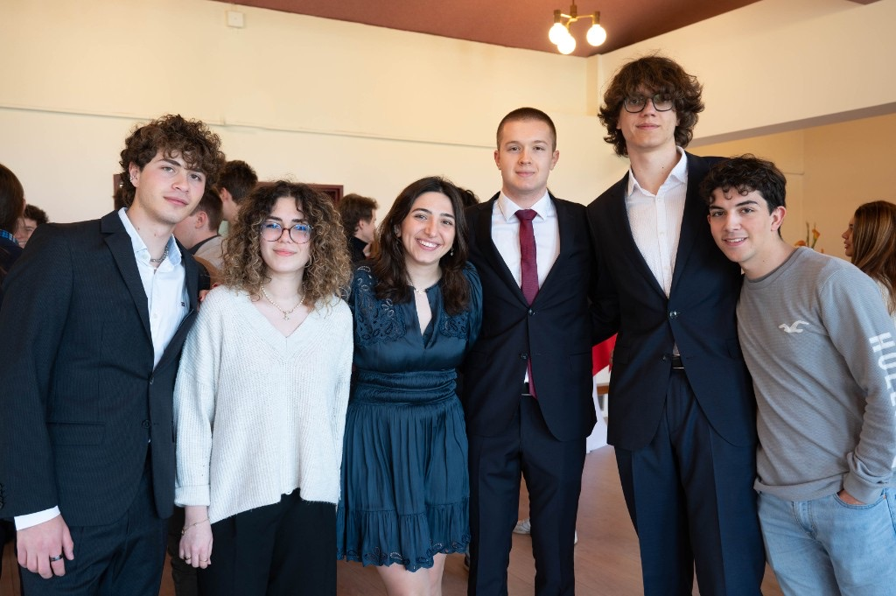

Awards & Honors
Mathematical Olympiads
- Romanian Mathematical Olympiad (RMO): Gold Medal (ranked 1st, max score) · 2022; Silver · 2021; Gold · 2019, 2018
- European Girls' Mathematical Olympiad (EGMO): Gold Medal (ranked 5th in Europe) · 2021; Bronze · 2019
- Cyberspace Mathematical Competition: Silver Medal · 2020
- Junior Balkan Mathematical Olympiad (JBMO): Gold Medal · 2018
- Romanian National Informatics Olympiad: National Finalist · 2019
Excellence Scholarships
- ESOP Excellence Scholarship, ETH Foundation · 2025

- Women in Computer Science Scholarship, Bending Spoons · 2024
- "Mathématique au féminin" Scholarship, FMJH · 2024
- Excellence Scholarship, Fondation de l'X · 2022
